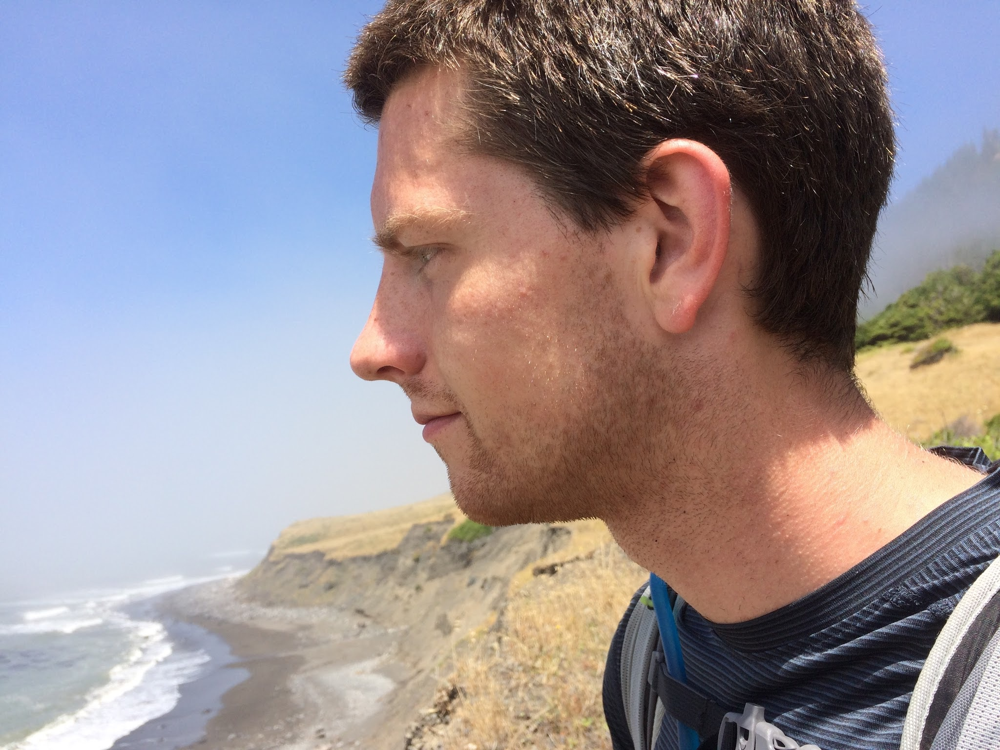

About Me
Wahoo! Finally a page where everything isn't a hyperlink! Well, since you made it this far, here's a bit about me.
I am currently a second-year graduate student at UC Berkeley studying physics and doing supernova cosmology research (translation: data science). I've realized that I'm much more interested in data and software, and more generally solving interesting problems, than the physics itself. Hence, I'm looking to transition to industry coming this May (2018) when I graduate. So look out world, cause here I come!
On a related note, if you are hiring for a software or data role, I would love to get in touch with you. I can bring a strong background and perspective of physics and mathematics with solid object-oriented coding skills. Most importantly, I learn new things in a heartbeat and am a tireless worker with incredible focus.
So without further ado, here is my resume.
Now for the less fun stuff: boring trivia about me :/
- I was born and raised in Seattle, so I know all about grey skies and drizzly days.
- Sportswise, you can catch me playing soccer or basketball. I also love hiking, backpacking, lifting or running off the field.
- Crazy fact: I cannot seem to get hurt. Whenever I get in an accident (e.g., derp my road bike in the SF trolley tracks) I somehow manage to wind up standing still and straight up while the bike or whatever else was involved goes flailing. Don't ask me how (my best guess is the years of training on crashing bikes and ATVs growing up).
- Okay one more: I am a very easy-going guy who doesn't like to argue much or throw my opinion on trivial topics unnecessarily into the ring, but when it comes to lifting I am way too opinionated. Spoiler, if you're not circuiting or super-setting for most of your workouts odds are you aren't getting the most out of it. Maybe this should be in the ever-so-lacking blog...
And here's me!
Email (more reliable): kcalebeades AT gmail.com
Phone: (206) 920-9435